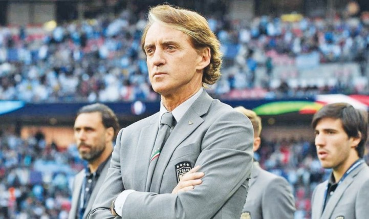
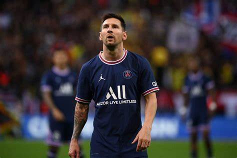

Thomas Tuchel puso primera en el Bayern Munich

el pasado viernes se llevó a cabo la presentación de Thomas Tuchel como nuevo entrenador del Bayern Munich. Esta es una nueva oportunidad para el estratega alemán en uno de los grandes equipos del mundo y tratará de que el Bayern vuelva a ser ese equipo que domina la Bundesliga durante toda la temporada y que pelea por ganar la Champions League.
¿Mancini al PSG?
Según el diario italiano Il Messaggero, tanto Mancini como José Mourinho son los últimos apuntados por la dirigencia del PSG. Pero mientras parece difícil la salida del técnico de la Roma, no sucede lo mismo con el de Italia, quien asumió hace varios años y alternó buenas y malas: cambió el estilo de juego de la Azzurra y ganó la última Euro pero no logró clasificarse al Mundial de Qatar.
¿Messi se va del PSG?
A falta de confirmación oficial, Lionel Messi no jugará más en el Paris Saint Germain. El argentino que llegó hace un año y medio y tiene contrato hasta junio de este año, no será más jugador del PSG porque él decidió no renovar el vínculo y además, desde la directiva también tienen su motivo. En un principio, PSG le ofreció una oferta de renovación de un año más, con otro opcional, es decir, hasta 2025, pero eso no sucederá.
El PSG ganó con un golazo de Messi y va rumbo al título
Lionel Messi le puso el moño a una jugada del lujo y el Parque de los Príncipes se llenó de aplausos. Empezó la jugada trabando con un rival, condujo entre otros dos y tocó para Kylian Mbappé quien, de primera, metió una asistencia de taco brillante para que el zurdazo del argentino se gritara con todo y despertara alegría para cualquiera que estuviera mirando. Ese fue el tercer gol de un PSG se permitió olvidarse un poco de los problemas y ganó un partido clave: fue 3-1 contra el Lens que venía segundo y que ahora quedó a nueve puntos con siete fechas por jugar.